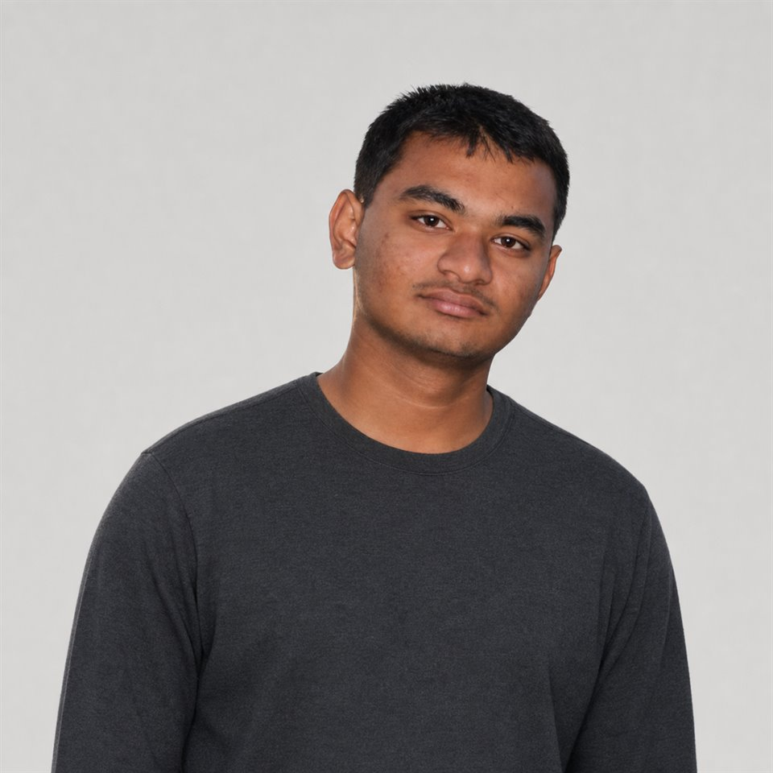
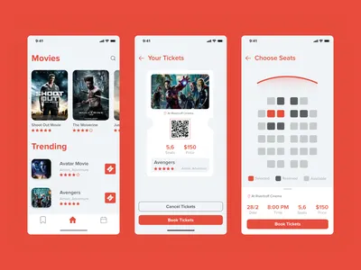
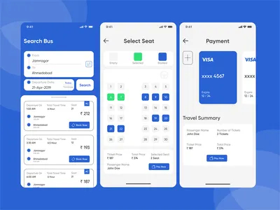
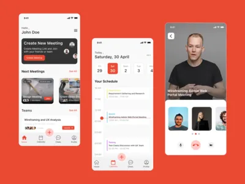

–Present
Full-Stack Developer
Redlio Designs · Ahmedabad, India ↗Owning full-stack delivery across application interfaces, services, data, and production infrastructure.
Full-stack developer · Technical writer
I’m Tushar Kanjariya. For 6+ years, I’ve turned product requirements into dependable systems across frontend, backend, data, and infrastructure.
Review my experience
Currently
Experience & education
–Present
Owning full-stack delivery across application interfaces, services, data, and production infrastructure.
–
Delivered production software across frontend and backend systems in collaborative engineering teams.
Completed six months of practical full-stack engineering training.
–
Designed mobile application screens and web experiences while developing an independent design practice.
Certification · 2023–2026
Education · 2017–2020
Education · 2014–2017
Selected projects · 2020–present
Professional systems, open-source tools, and hands-on AI explorations. A closer look at the problems I work on and the parts I build.
Built as part of company teams
Email warm-up & cold email automation
Developing email warm-up and cold email automation with scheduled workflows and background queues. I continue to improve the system and add functionality as part of the product team.
Next.js · Node.js · Python · MongoDB · Redis · BullMQ · Cron jobs · IMAP · SMTP
Company project at Redlio Designs. My work focuses on email automation, using AI agents alongside manual engineering. The linked product includes work by the wider team.
A custom platform for a UAE glass company, with pricing based on product specifications, online payments, rewards, and administration for products, coupons, and orders.
Next.js · Node.js · MongoDB · REST APIs · UTap
Developed the commerce workflows as a company developer, including configurable product pricing and management features. Built without AI assistance.
A matchmaking platform bringing together detailed profiles, preference-based discovery, mutual connections, premium access, and downloadable biodata.
Next.js · Node.js · MongoDB · JusPay · PayU
Built registration and profile flows, matching interactions, premium features, payment integrations, and PDF biodata downloads as part of my company work. Built without AI assistance.
An internal ERP for a US manufacturer and its connected companies, digitizing spreadsheet-based inventory workflows and supporting detailed pole and component configurations.
My work: Angular
System stack: .NET · MySQL · AWS
At Simform, I developed frontend screens and large forms, connected them to backend APIs, and implemented data binding and validation. My role was frontend development. Built without AI assistance.
Personal projects with public code
I built this to find ideas for my Medium articles. It brings developer-community sources into one consistent research workflow, making topics easier to compare and investigate.
Node.js · MCP · API integrations
Explore the repository for Medium Research MCPAn XML-sitemap problem at work became a reusable tool. This dependency-free Node.js package converts website sitemaps into JSON, with both a command-line interface and a programmatic API.
Node.js · XML · JSON · CLI
One idea, two implementations
I explored document question-answering with two database approaches. Both are AI-assisted learning projects, built to understand retrieval, embeddings, and the trade-offs behind the answers.
A document assistant exploring local embeddings, Atlas Vector Search, and answers accompanied by retrieved source passages.
Node.js · MongoDB Atlas · Transformers.js · RAG
View MongoDB versionThe same document workflow, reworked to explore SQL-based vector retrieval, HNSW indexing, and transactional document ingestion.
Node.js · PostgreSQL · pgvector · RAG
View PostgreSQL versionCapabilities
Angular · React · Vue · Next.js · HTML & CSS · Electron
Node.js · NestJS · Express · PHP · MongoDB · MySQL · Postgres · Firebase · Redis
UI/UX Design · Figma · Adobe XD · Photoshop · Illustrator · After Effects · GitHub · Bitbucket · Zoho
Also experienced with REST APIs, NuxtJS, BullMQ, CRON, VPS/KVM management, planning, execution, and cross-team communication.
Engineering approach
I bring structure to complex builds, make decisions clear, and help teams move from requirements to dependable releases.
I work across frontend, backend, data, and infrastructure. My UI/UX background strengthens product judgment, while technical writing helps me document decisions, share knowledge, and communicate clearly across teams.
Recent writing
Artificial Intelligence ·
JavaScript ·
Node.js ·
Connect with me
Code, writing, design, community, and the occasional recommendation.
Previous design work
Selected UI/UX explorations from my design practice. This work shaped the product sensitivity I bring to engineering today.

Mobile UI/UX

Mobile UI/UX

Web application UI/UX
Hiring or planning a project?
Phone